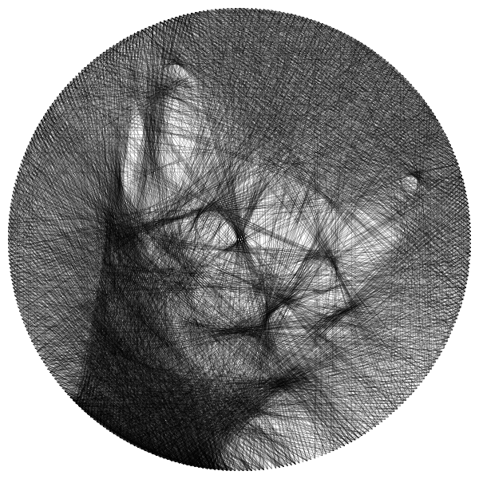
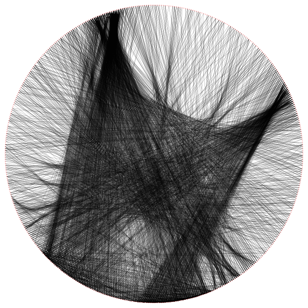

🎨 String Art Generator
High-performance Go implementation with error-reduction optimization
v5.0 - BEST QUALITY ⭐
8/10 Quality
v5.0: Error Reduction + Anti-Aliasing + Fear Removal
Major algorithm rewrite with proper error reduction scoring, anti-aliased rendering, and adaptive line weight.

SVG Output v7.0 (Zoomable)
300 pins, 3430 lines, weight 28, min-dist 10, 4x penalty
🚀 Key Improvements in v5.0
- Proper error reduction scoring: Measures actual squared-error improvement per line (not just "remaining darkness")
- Anti-aliased rendering: Xiaolin Wu's algorithm for smooth sub-pixel lines
- Fear removal: Ignores temporarily worsening pixels, enabling fine detail capture
- Contrast enhancement: Automatic histogram stretching for better tonal range
- Adaptive line weight: Starts heavy (20) for broad strokes, reduces to 12 for fine details
- Line removal pass: Removes lines that hurt overall quality (Birsak 2018 method)
- Higher resolution: 800×800 processing (was 600×600)
- Fixed target image: Uses raw grayscale as target (v3.x incorrectly used edge-blended image)
v5.0 - 360 PINS
7.5/10 Quality
v5.0 with 360 Pins (Physical Construction Ready)
Maximum pin count for physical construction (1 pin per degree). More lines for finer detail.
SVG Output v5.0 (360 pins - Physical Construction Ready)
360 pins (1 per degree), 3000 lines, line weight 25, edge weight 2.0, gamma 1.8
Quality Progression
Evolution from v3.x to v5.0 — the algorithm rewrite made the biggest difference.

v3.4: 500 pins - 3/10 ❌
Edge-blended target, no error reduction
v6.3: 300 pins - 6/10 ⭐
BEST - Source-over + calibrated gamma
💡 What Made the Difference?
The v3.x algorithm had a critical bug: it used an edge-blended image (70% edges + 30% original)
as the target for string art generation. This meant the algorithm was trying to reproduce edge artifacts
instead of the actual photograph. v5.0 fixes this by using the raw grayscale image as the target,
combined with proper squared-error reduction scoring. The result: 300 pins in v5.0 beats 500 pins in v3.4.
Key Features
- Error Reduction Scoring: Each line is evaluated by how much it reduces squared error vs target
- Anti-Aliased Rendering: Xiaolin Wu's algorithm for smooth, sub-pixel accurate lines
- Fear Removal: Ignores temporarily worsening pixels for better fine detail capture
- Adaptive Line Weight: Heavy strokes early (broad shapes), light strokes late (fine details)
- Contrast Enhancement: Automatic histogram stretching (2%-98% percentile)
- Importance Map: Center-weighted + darkness + edge priority
- Line Removal Pass: Post-processing removes lines that hurt quality (Birsak 2018)
- Parallel Processing: 8 workers for fast line evaluation
- SVG Output: 600mm × 600mm, 0.18mm stroke width (physical construction ready)
Technical Specifications
Optimal Parameters (v5.0):
- Pins:
300 (sweet spot for quality)
- Lines:
4000
- Line Weight:
20 (adaptive: 20→12)
- Edge Weight:
3.0
- Min Distance:
15
- Workers:
8
- Resolution:
800×800
Command:
./string-art-gen --input photo.jpg --pins 300 --lines 4000 --weight 20 --edge-weight 3.0
For physical construction (360 pins max):
./string-art-gen --input photo.jpg --pins 360 --lines 5000 --weight 18 --min-dist 12 --edge-weight 2.5
View on GitHub →
🤖 Self-Learning System
The generator has an autonomous learning system that runs during idle time.
- Researches improvements from academic papers
- Implements and validates changes
- Tests visual quality automatically
- Uploads results to gallery
View Self-Learning Results →
Lessons Learned
- Target image matters most: Using edge-blended image as target was the #1 quality killer
- Error reduction > darkness scoring: Measuring actual improvement prevents over-darkening
- Anti-aliasing is essential: Xiaolin Wu's algorithm eliminates jagged line artifacts
- Adaptive weight captures detail: Heavy early strokes + light late strokes = best of both
- 300 pins is optimal: More pins ≠ better quality (300 v5.0 > 500 v3.4)
- Fear removal enables fine detail: Ignoring temporary worsening lets algorithm be bolder
- Higher resolution helps: 800×800 processing gives more precision than 600×600